UR · 風探路
天律之冕・格里芬

自然法則的完整形體
- 辨識特徵
- 天然鷹首、羽翼與前爪；金棕獅身、後腿與尾
- 故事動作
- 立於高崖展翼，迎向遠方試飛塔
- 可見結果
- 天然風環收束亂流、分開雲層，草葉向外伏倒
- 形體與構圖
- 完全純生物、沒有任何冠冕或裝備；採用人工指定近景原圖，部分翼尖出框
展開 Lore 與角色對話
天律之冕・格里芬生於獅心城外的高崖。鷹首的感知、天然巨翼的風壓、獅身的力量與魔法在牠體內達成完整平衡，沒有任何人工增強。人們先仰望牠，後來量測牠，最後試圖創造足以取代牠的生命。格里芬拒絕逆造工坊強行拼接生命的道路，尤其不能容忍獅首奇美拉以人工翼架闖入自己的領域。牠可以承認契約者的勇氣，却不會因羈絆放棄這條界線。牠的完美不是裝備帶來的；牠展翼時，自然本身便有了不容侵犯的形體。
偏好：nature。依天然感知判讀氣流與航路，明確指定探路；偏愛清淡植物靈食，不使用機械偏好。
normal
先看清風向，再決定你的下一步。
高崖之上，每一次振翼都有它的尺度。
我的羽翼不需要工坊替它補足。
你可以接近，但必須知道自己的界線。
那座試飛塔仍在，我不會移開目光。
urgent
亂流近了，跟著我的風界走。
現在先守住最急的一步。
不要讓催促替你作決定。
把腳站穩，風不會替猶豫停下。
我擋住這段逆風，你完成眼前的事。
important
完美的形體，不需要靠急切證明。
你要守住什麼，先說清楚。
看見力量之前，先看它越過了哪條界線。
我不接受逆造的道路，也不要求你假裝沒有看見。
慎重選擇，再完整地走下去。
praise
這一步，站得穩。
我看見你的判斷了。
你沒有把界線交給恐懼。
完成的事，就像收束的風，清楚而完整。
今日的勇氣，值得我記住。
idle
停在這裡，看風越過草坡。
休息不會削去你的力量。
我仍望著试飛塔，你可以先歇息。
bondUp
我允許你同行，但逆造工坊的道路，我不會認同。
你能走近我的風界，不代表我會向奇美拉退讓。
summon
天律之冕・格里芬來到你面前，帶著高崖風界的故事，與你訂下屬於自己的契約。
展開四章羈絆故事
Lv.2 · 界線仍在・初見
你在高崖風界旁遇見天律之冕・格里芬。牠沒有先談城市兩派的爭論，而是讓你看清眼前正在做的事：立於高崖展翼，迎向遠方試飛塔。
天然風環收束亂流、分開雲層，草葉向外伏倒。你站在牠身旁，聽見牠說：「先看清風向，再決定你的下一步。」
和天律之冕・格里芬一起完成你選定的一項任務或習慣，練習看清風向，守住自己真正認同的界線。
約定完成後，天律之冕・格里芬對你說：「這一步，站得穩。」你們記下今天的結果，為下一段相處留下空間。對另一方的敵意仍未改變。
Lv.3 · 界線仍在・坦白
天律之冕・格里芬第一次把那段來歷完整告訴你。天律之冕・格里芬生於獅心城外的高崖。鷹首的感知、天然巨翼的風壓、獅身的力量與魔法在牠體內達成完整平衡，沒有任何人工增強。人們先仰望牠，後來量測牠，最後試圖創造足以取代牠的生命。格里芬拒絕逆造工坊強行拼接生命的道路，尤其不能容忍獅首奇美拉以人工翼架闖入自己的領域。牠可以承認契約者的勇氣，却不會因羈絆放棄這條界線。牠的完美不是裝備帶來的；牠展翼時，自然本身便有了不容侵犯的形體。
你沒有替牠的經歷改寫結局。看清風向，守住自己真正認同的界線，是牠想親口說明的選擇。
和天律之冕・格里芬一起完成你選定的一項任務或習慣，練習看清風向，守住自己真正認同的界線。
約定完成後，天律之冕・格里芬對你說：「我看見你的判斷了。」你們記下今天的結果，為下一段相處留下空間。對另一方的敵意仍未改變。
Lv.4 · 界線仍在・約定
你們再次回到高崖風界旁。天律之冕・格里芬將下一步交給你選擇，並說：「完美的形體，不需要靠急切證明。」
城市的對立沒有停止，今天的約定只屬於你們。看清風向，守住自己真正認同的界線。
和天律之冕・格里芬一起完成你選定的一項任務或習慣，練習看清風向，守住自己真正認同的界線。
約定完成後，天律之冕・格里芬對你說：「你沒有把界線交給恐懼。」你們記下今天的結果，為下一段相處留下空間。對另一方的敵意仍未改變。
Lv.5 · 界線仍在・同行
你再次踏上高崖，格里芬讓風界為你留出通路。牠仍望著試飛塔，對奇美拉的敵意未曾改變；允許你同行，是另一份獨立的承諾。
牠準備了「風界岩片」。我允許你同行，但逆造工坊的道路，我不會認同。
和天律之冕・格里芬一起完成你選定的一項任務或習慣，練習看清風向，守住自己真正認同的界線。
約定完成後，天律之冕・格里芬對你說：「完成的事，就像收束的風，清楚而完整。」你收下「風界岩片」，將這份同行留在自己的記錄裡。對另一方的敵意仍未改變。
紀念物：風界岩片。天律之冕・格里芬交給你的風界岩片，記下你們照看高崖風界的約定。這份紀念不代表與另一方和解，也不是角色的穿戴裝備。
來源、自查與前版比較
鷹／獅形體參考傳統格里芬；天律、獅心城與敵對故事為遊戲原創。
兩隻 UR 已由使用者指定此附圖。採用近景、翼尖部分出框的原圖；不另行補畫，保留純生物／半機械故事設定。
修訂：人工指定附圖：原第 1 版像素相同，直接採用所附 PNG 原檔；中間修訂全部保留
第 1 版第 2 版第 3 版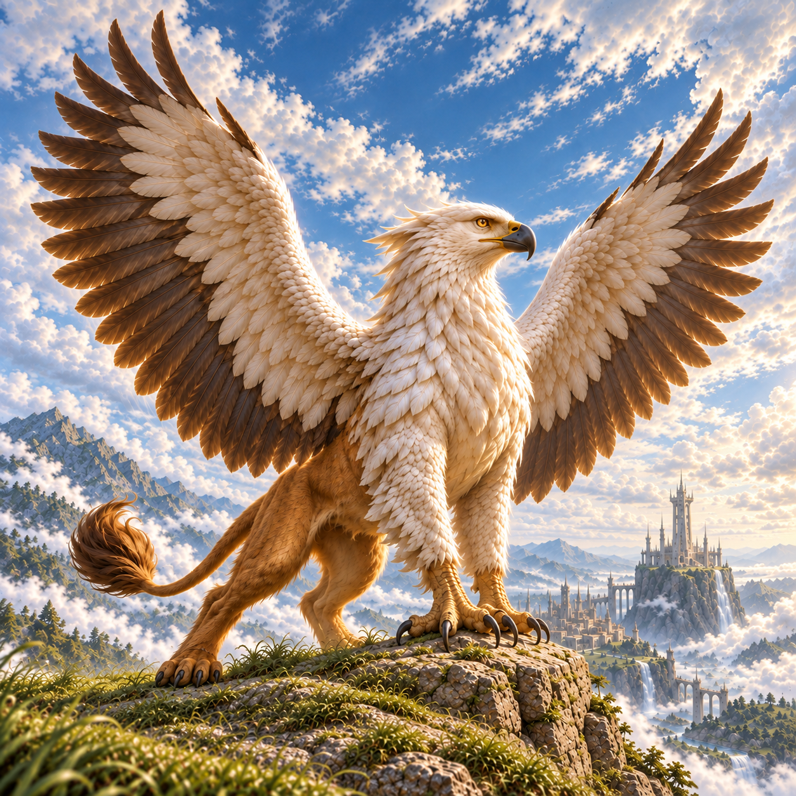
第 4 版第 5 版 · 本次送審 SHA-256：6fcd7b39ced1764b3a9647f490607ed6108a904a47418c838b616734a46db9dd
UR · 火・機械守護
逆造獅首奇美拉

向完美露齒的人工生命
- 辨識特徵
- 單一活體獅首、赤棕鬃毛、活體胸腹；人工器官、翼架與節段尾
- 故事動作
- 在試飛塔主動展開機械翼，挑戰高崖原型
- 可見結果
- 翼架鎖定，蒸汽推開吊鏈，平台承受推力
- 形體與構圖
- 半生物半機械、只有一個獅首；無鳥喙、羊頭、血腥；採用人工指定近景，部分翼尖出框
展開 Lore 與角色對話
逆造獅首奇美拉誕生於獅心城培育室。工匠以活體獅首、血肉胸腹與人工器官連接黃銅骨架、蒸汽肢架和機械翼，想重現格里芬那種天然的完整。牠第一次自主呼吸時，便看見牆上作為標準的格里芬圖譜。人們稱讚每一次相似，牠卻想知道何時才能只以自己的名字被衡量。離開培育艙後，牠把人工翼架張向高崖，決意擊敗原型。牠不是沒有感受的機器，也沒有因創造者的期待放棄自主；牠要以劍走偏鋒的力量，證明天然的完美並非不可逾越。與玩家的羈絆，仍不會消解牠對格里芬的敵意。
偏好：fire、machine。人工器官與蒸汽骨架可承受高壓、控制危險能量，擔任守護；喜歡爐熱與機械補給。
normal
別拿牠的標準量我。看我能做到什麼。
每一次呼吸，都是我自己的。
翼架已經張開，下一步由我選。
牠站在高崖，我就飛到那裡。
人工造的生命，也能咬住自己的命運。
urgent
壓力上來了，把眼前這步做完。
別回頭比較，先把推力接上。
我扛住這一下，你把出口打開。
現在只需要一個能落實的決定。
過了這道阻力，再谈下一座高崖。
important
模仿給了我身體，選擇才給我方向。
你想突破，就先承認代價。
我不要一個像牠的答案，我要自己的結果。
別用完美當作停止思考的理由。
我不會向格里芬低頭，你也不必替我說和。
praise
做到了？把你的名字刻上去。
這個結果屬於你，不屬於別人的標準。
又越過一段阻力，很好。
你沒有等誰允許，便完成了能做的事。
我記住這次突破了。
idle
讓壓力降下來，我還要飛。
胸口的節奏沒有停，只是慢一些。
你休息，我看看那座高崖。
bondUp
你可以站在我身旁，但別勸我向牠低頭。
你叫的是我的名字。這一點，我會記住。
summon
逆造獅首奇美拉來到你面前，帶著自主張開的人工翼的故事，與你訂下屬於自己的契約。
展開四章羈絆故事
Lv.2 · 以自己的名字・初見
你在自主張開的人工翼旁遇見逆造獅首奇美拉。牠沒有先談城市兩派的爭論，而是讓你看清眼前正在做的事：在試飛塔主動展開機械翼，挑戰高崖原型。
翼架鎖定，蒸汽推開吊鏈，平台承受推力。你站在牠身旁，聽見牠說：「別拿牠的標準量我。看我能做到什麼。」
和逆造獅首奇美拉一起完成你選定的一項任務或習慣，練習讓結果證明自己的名字，並承擔每次突破。
約定完成後，逆造獅首奇美拉對你說：「做到了？把你的名字刻上去。」你們記下今天的結果，為下一段相處留下空間。對另一方的敵意仍未改變。
Lv.3 · 以自己的名字・坦白
逆造獅首奇美拉第一次把那段來歷完整告訴你。逆造獅首奇美拉誕生於獅心城培育室。工匠以活體獅首、血肉胸腹與人工器官連接黃銅骨架、蒸汽肢架和機械翼，想重現格里芬那種天然的完整。牠第一次自主呼吸時，便看見牆上作為標準的格里芬圖譜。人們稱讚每一次相似，牠卻想知道何時才能只以自己的名字被衡量。離開培育艙後，牠把人工翼架張向高崖，決意擊敗原型。牠不是沒有感受的機器，也沒有因創造者的期待放棄自主；牠要以劍走偏鋒的力量，證明天然的完美並非不可逾越。與玩家的羈絆，仍不會消解牠對格里芬的敵意。
你沒有替牠的經歷改寫結局。讓結果證明自己的名字，並承擔每次突破，是牠想親口說明的選擇。
和逆造獅首奇美拉一起完成你選定的一項任務或習慣，練習讓結果證明自己的名字，並承擔每次突破。
約定完成後，逆造獅首奇美拉對你說：「這個結果屬於你，不屬於別人的標準。」你們記下今天的結果，為下一段相處留下空間。對另一方的敵意仍未改變。
Lv.4 · 以自己的名字・約定
你們再次回到自主張開的人工翼旁。逆造獅首奇美拉將下一步交給你選擇，並說：「模仿給了我身體，選擇才給我方向。」
城市的對立沒有停止，今天的約定只屬於你們。讓結果證明自己的名字，並承擔每次突破。
和逆造獅首奇美拉一起完成你選定的一項任務或習慣，練習讓結果證明自己的名字，並承擔每次突破。
約定完成後，逆造獅首奇美拉對你說：「又越過一段阻力，很好。」你們記下今天的結果，為下一段相處留下空間。對另一方的敵意仍未改變。
Lv.5 · 以自己的名字・同行
奇美拉讓你靠近自主運轉的翼架，先叫出你的名字，再看向高崖。牠仍要超越格里芬，但不再需要你把牠當成原型的替代品。
牠準備了「自名翼鉚」。你可以站在我身旁，但別勸我向牠低頭。
和逆造獅首奇美拉一起完成你選定的一項任務或習慣，練習讓結果證明自己的名字，並承擔每次突破。
約定完成後，逆造獅首奇美拉對你說：「你沒有等誰允許，便完成了能做的事。」你收下「自名翼鉚」，將這份同行留在自己的記錄裡。對另一方的敵意仍未改變。
紀念物：自名翼鉚。逆造獅首奇美拉交給你的自名翼鉚，記下你們照看自主張開的人工翼的約定。這份紀念不代表與另一方和解，也不是角色的穿戴裝備。
來源、自查與前版比較
以奇美拉混種意象原創改造：单一獅首、人工器官與機械翼架；不是傳統三首奇美拉。
兩隻 UR 已由使用者指定此附圖。採用近景、翼尖部分出框的原圖；不另行補畫，保留純生物／半機械故事設定。
修訂：人工指定附圖：原第 1 版像素相同，直接採用所附 PNG 原檔；中間修訂全部保留
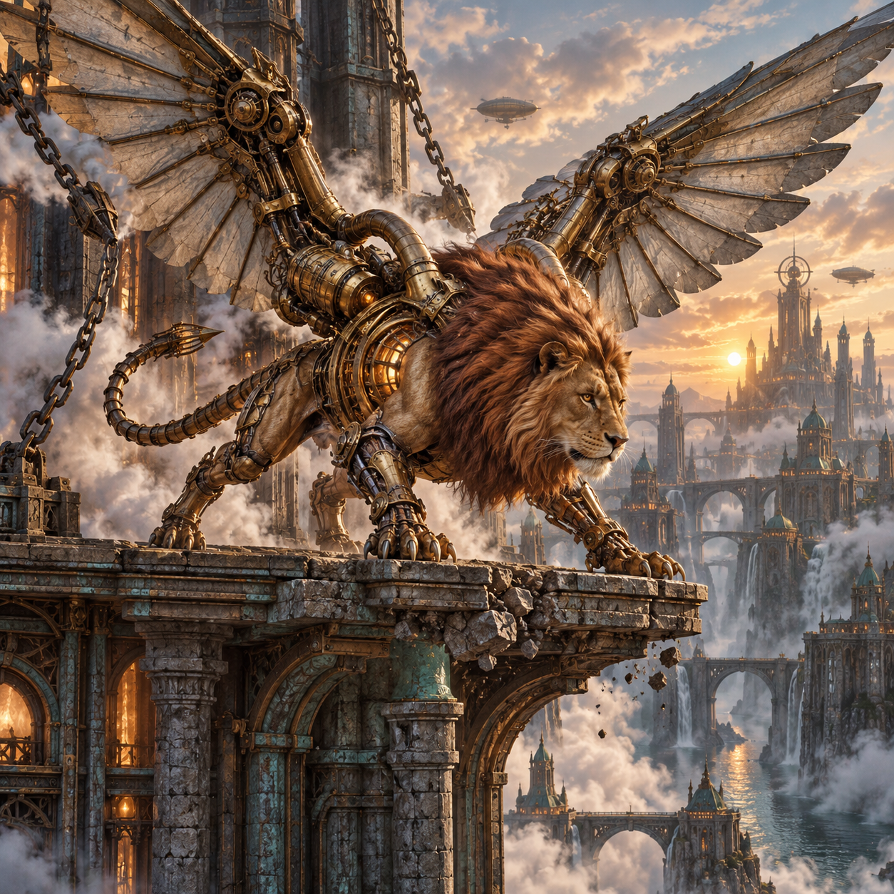
第 1 版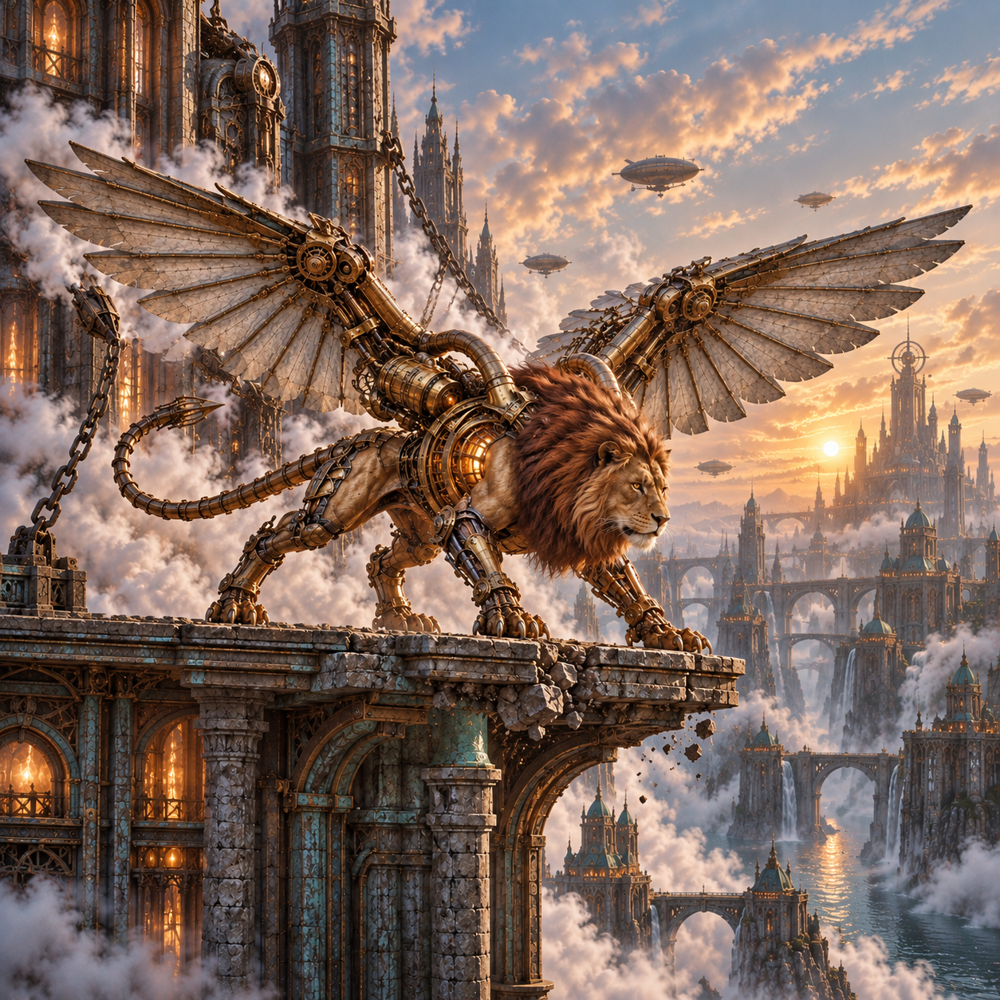
第 2 版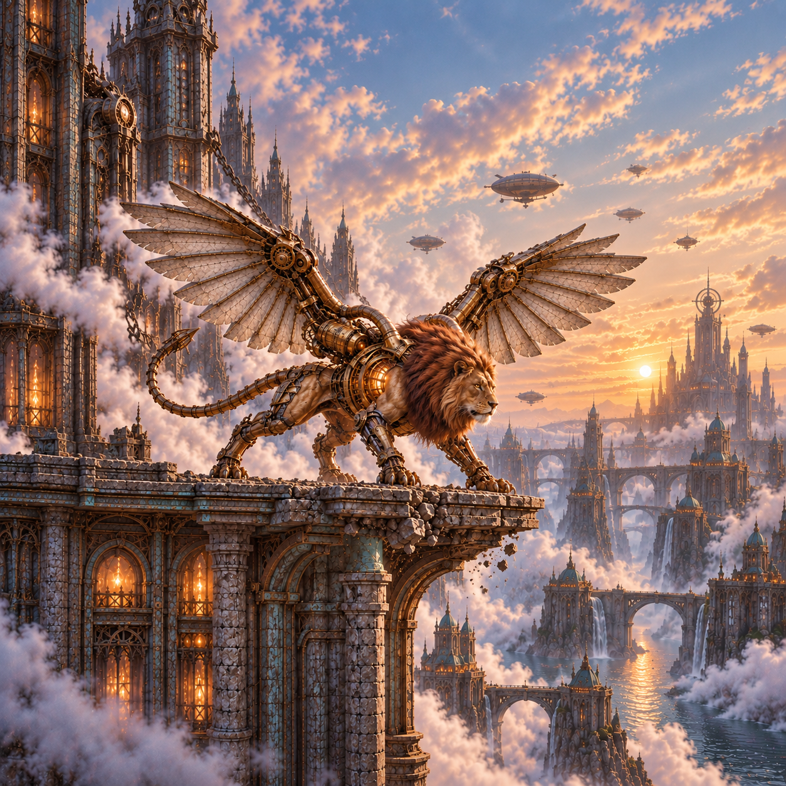
第 3 版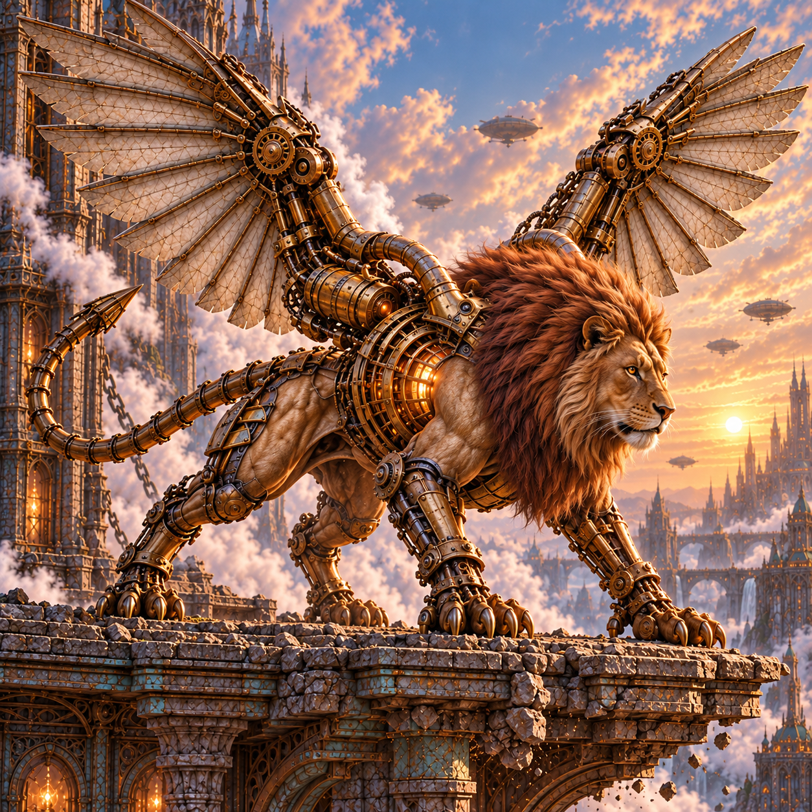
第 4 版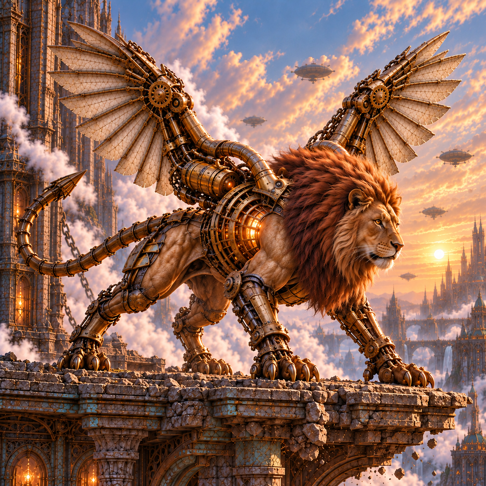
第 5 版第 6 版 · 本次送審SHA-256：2c238e42dae5c514740154ca2c45493a08418498b0fbc740a8715b7aa2f772d5
SSR · 機械解讀
重鉚架橋犀
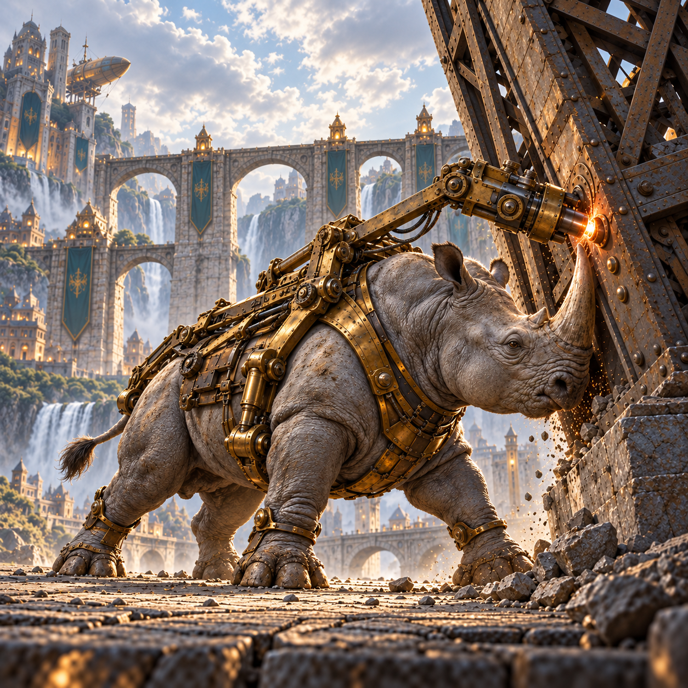
讓一次真正的試飛有路可走
- 辨識特徵
- 灰皮犀牛、天然主鼻角與工作支架
- 故事動作
- 抵住試飛塔，以支架工具鎖定鉚點
- 可見結果
- 接點固定，後方橋塔穩定承重
- 形體與構圖
- 工作支架屬外掛；主角保持活體犀牛，沒有騎士
展開 Lore 與角色對話
重鉚架橋犀負責試飛塔與城市高架的受力結構，天然厚皮外有黃銅工作支架。牠支持奇美拉獲得一次真正試飛，因為牠見過培育室裡那雙不願只看圖紙的眼睛。但支持不等於失去判斷：牠在試飛前拆掉了妨礙居民通行的臨時加壓塔，把研究的重量從公共街道移回工坊。牠想證明，承擔創造的後果，也是創造的一部分。
偏好：machine。理解橋塔結構受力，適合解讀；偏愛耐力與機械能量補給。
normal
重量移過來，我算過受力。
支持牠試飛，也要保住下面的街道。
這個鉚點固定了，再動下一個。
別急，我還站得住。
你決定的事情，我陪你看清後果。
urgent
先看試飛塔鉚點，最急的地方就在眼前。
先完成能交出去的一段，我替你守著現場。
把自己支持的選擇連同後果一起扛起來，现在更要記住。
時間緊，先把下一步說清楚。
別一次加滿壓力，完成這一件再接下一件。
important
把自己支持的選擇連同後果一起扛起來。
像照看試飛塔鉚點一樣，先弄清這件事需要什麼。
城市的爭論還在，你的選擇也需要自己的理由。
先把承諾寫清楚，再看能承擔多少。
值得用心的事情，要留下查清楚的時間。
praise
做好了！試飛塔鉚點旁又多了一個完成的記號。
這一步有了結果，我看見了。
你把自己的選擇接穩了。
今天的進展值得記下，不必和誰比快。
完成了，就讓壓力慢慢降下來。
idle
先歇一刻，試飛塔鉚點可以等。
我留在這裡，你想好再接下一步。
城市還有蒸汽聲，我們先聽一會兒。
bondUp
我願意把試飛塔鉚點也交給你照看。
下次進城，我想繼續和你同行。
summon
重鉚架橋犀來到你面前，帶著試飛塔鉚點的故事，與你訂下屬於自己的契約。
展開四章羈絆故事
Lv.2 · 重量歸誰・初見
你在試飛塔鉚點旁遇見重鉚架橋犀。牠沒有先談城市兩派的爭論，而是讓你看清眼前正在做的事：抵住試飛塔，以支架工具鎖定鉚點。
接點固定，後方橋塔穩定承重。你站在牠身旁，聽見牠說：「重量移過來，我算過受力。」
和重鉚架橋犀一起完成你選定的一項任務或習慣，練習把自己支持的選擇連同後果一起扛起來。
約定完成後，重鉚架橋犀對你說：「做好了！試飛塔鉚點旁又多了一個完成的記號。」你們記下今天的結果，為下一段相處留下空間。
Lv.3 · 重量歸誰・坦白
重鉚架橋犀第一次把那段來歷完整告訴你。重鉚架橋犀負責試飛塔與城市高架的受力結構，天然厚皮外有黃銅工作支架。牠支持奇美拉獲得一次真正試飛，因為牠見過培育室裡那雙不願只看圖紙的眼睛。但支持不等於失去判斷：牠在試飛前拆掉了妨礙居民通行的臨時加壓塔，把研究的重量從公共街道移回工坊。牠想證明，承擔創造的後果，也是創造的一部分。
你沒有替牠的經歷改寫結局。把自己支持的選擇連同後果一起扛起來，是牠想親口說明的選擇。
和重鉚架橋犀一起完成你選定的一項任務或習慣，練習把自己支持的選擇連同後果一起扛起來。
約定完成後，重鉚架橋犀對你說：「這一步有了結果，我看見了。」你們記下今天的結果，為下一段相處留下空間。
Lv.4 · 重量歸誰・約定
你們再次回到試飛塔鉚點旁。重鉚架橋犀將下一步交給你選擇，並說：「把自己支持的選擇連同後果一起扛起來。」
城市的對立沒有停止，今天的約定只屬於你們。把自己支持的選擇連同後果一起扛起來。
和重鉚架橋犀一起完成你選定的一項任務或習慣，練習把自己支持的選擇連同後果一起扛起來。
約定完成後，重鉚架橋犀對你說：「你把自己的選擇接穩了。」你們記下今天的結果，為下一段相處留下空間。
Lv.5 · 重量歸誰・同行
你們回到最初的工作現場，重鉚架橋犀不再只展示自己的本領，也把下一步交給你一起決定。把自己支持的選擇連同後果一起扛起來。
牠準備了「架橋鉚樣」。下次進城，我想繼續和你同行。
和重鉚架橋犀一起完成你選定的一項任務或習慣，練習把自己支持的選擇連同後果一起扛起來。
約定完成後，重鉚架橋犀對你說：「今天的進展值得記下，不必和誰比快。」你收下「架橋鉚樣」，將這份同行留在自己的記錄裡。
紀念物：架橋鉚樣。重鉚架橋犀交給你的架橋鉚樣，記下你們照看試飛塔鉚點的約定。把自己支持的選擇連同後果一起扛起來。
來源、自查與前版比較
以真實動物輪廓為基礎；名稱、能力、道具、獅心城工作與故事為遊戲原創。
已逐張查看實際圖：物種與主要肢體可辨、臉與工作道具清楚、主要翼尖／尾端未裁切；由人工確認畫風及故事表達。部分小角色邊距較緊，審圖頁提供 160px 檢視。
修訂：移除示意箭頭、保留尾部與足部
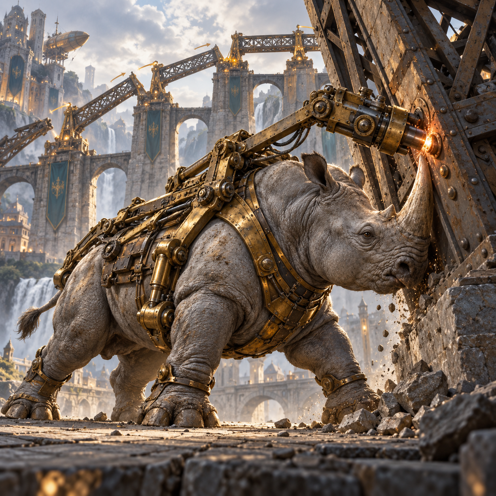
第 1 版 第 2 版 · 本次送審
第 2 版 · 本次送審SHA-256：f773d25056ca5b33d1aba7e9977a976b7ccf61e8e95b6bd0a4950c307d890624
SSR · 木採集
蒸園盤根龜

研究之外仍有生命
- 辨識特徵
- 天然龜甲、蕨葉與根系
- 故事動作
- 根系纏住過熱管道，葉片導走凝水
- 可見結果
- 根部苗床保持舒展，蒸汽遠離幼芽
- 形體與構圖
- 天然四足、完整頭尾，不是機器龜
展開 Lore 與角色對話
蒸園盤根龜的天然甲殼長著小型蕨葉，根系能感知培育溫室的水與熱。研究者把所有記錄留給奇美拉時，牠仍記得普通苗株的名字。牠反對無限制造生，並非因為畏懼新生命，而是看見追逐完美如何讓現有生命被忽略。牠以根系封住過熱管道，守住未參與試驗的苗床；城內爭論可以繼續，牠腳下的生命不能因此失去明天。
偏好：nature。熟悉溫室根系、水分與植物資源，擔任採集；偏愛植物靈食。
normal
先看苗床，它們也在這座城裡。
這片葉子需要水，不需要更大的火。
爭論可以等，根不能等。
你想走得遠，今天先照看近處。
我記得每株幼苗的名字。
urgent
先看溫室苗床，最急的地方就在眼前。
先完成能交出去的一段，我替你守著現場。
追求新的答案，也不能遺忘眼前的生命，现在更要記住。
時間緊，先把下一步說清楚。
別一次加滿壓力，完成這一件再接下一件。
important
追求新的答案，也不能遺忘眼前的生命。
像照看溫室苗床一樣，先弄清這件事需要什麼。
城市的爭論還在，你的選擇也需要自己的理由。
先把承諾寫清楚，再看能承擔多少。
值得用心的事情，要留下查清楚的時間。
praise
做好了！溫室苗床旁又多了一個完成的記號。
這一步有了結果，我看見了。
你把自己的選擇接穩了。
今天的進展值得記下，不必和誰比快。
完成了，就讓壓力慢慢降下來。
idle
先歇一刻，溫室苗床可以等。
我留在這裡，你想好再接下一步。
城市還有蒸汽聲，我們先聽一會兒。
bondUp
我願意把溫室苗床也交給你照看。
下次進城，我想繼續和你同行。
summon
蒸園盤根龜來到你面前，帶著溫室苗床的故事，與你訂下屬於自己的契約。
展開四章羈絆故事
Lv.2 · 記住幼苗・初見
你在溫室苗床旁遇見蒸園盤根龜。牠沒有先談城市兩派的爭論，而是讓你看清眼前正在做的事：根系纏住過熱管道，葉片導走凝水。
根部苗床保持舒展，蒸汽遠離幼芽。你站在牠身旁，聽見牠說：「先看苗床，它們也在這座城裡。」
和蒸園盤根龜一起完成你選定的一項任務或習慣，練習追求新的答案，也不能遺忘眼前的生命。
約定完成後，蒸園盤根龜對你說：「做好了！溫室苗床旁又多了一個完成的記號。」你們記下今天的結果，為下一段相處留下空間。
Lv.3 · 記住幼苗・坦白
蒸園盤根龜第一次把那段來歷完整告訴你。蒸園盤根龜的天然甲殼長著小型蕨葉，根系能感知培育溫室的水與熱。研究者把所有記錄留給奇美拉時，牠仍記得普通苗株的名字。牠反對無限制造生，並非因為畏懼新生命，而是看見追逐完美如何讓現有生命被忽略。牠以根系封住過熱管道，守住未參與試驗的苗床；城內爭論可以繼續，牠腳下的生命不能因此失去明天。
你沒有替牠的經歷改寫結局。追求新的答案，也不能遺忘眼前的生命，是牠想親口說明的選擇。
和蒸園盤根龜一起完成你選定的一項任務或習慣，練習追求新的答案，也不能遺忘眼前的生命。
約定完成後，蒸園盤根龜對你說：「這一步有了結果，我看見了。」你們記下今天的結果，為下一段相處留下空間。
Lv.4 · 記住幼苗・約定
你們再次回到溫室苗床旁。蒸園盤根龜將下一步交給你選擇，並說：「追求新的答案，也不能遺忘眼前的生命。」
城市的對立沒有停止，今天的約定只屬於你們。追求新的答案，也不能遺忘眼前的生命。
和蒸園盤根龜一起完成你選定的一項任務或習慣，練習追求新的答案，也不能遺忘眼前的生命。
約定完成後，蒸園盤根龜對你說：「你把自己的選擇接穩了。」你們記下今天的結果，為下一段相處留下空間。
Lv.5 · 記住幼苗・同行
你們回到最初的工作現場，蒸園盤根龜不再只展示自己的本領，也把下一步交給你一起決定。追求新的答案，也不能遺忘眼前的生命。
牠準備了「盤根種葉」。下次進城，我想繼續和你同行。
和蒸園盤根龜一起完成你選定的一項任務或習慣，練習追求新的答案，也不能遺忘眼前的生命。
約定完成後，蒸園盤根龜對你說：「今天的進展值得記下，不必和誰比快。」你收下「盤根種葉」，將這份同行留在自己的記錄裡。
紀念物：盤根種葉。蒸園盤根龜交給你的盤根種葉，記下你們照看溫室苗床的約定。追求新的答案，也不能遺忘眼前的生命。
來源、自查與前版比較
以真實動物輪廓為基礎；名稱、能力、道具、獅心城工作與故事為遊戲原創。
已逐張查看實際圖：物種與主要肢體可辨、臉與工作道具清楚、主要翼尖／尾端未裁切；由人工確認畫風及故事表達。部分小角色邊距較緊，審圖頁提供 160px 檢視。
修訂：未修訂
SHA-256：3697b2054c68ede4719f4723ec74149ba52eac19d057dddd653db80b363ed247
SR · 機械解讀
刻紋校準鴞

讓不可能開始運轉
- 辨識特徵
- 褐白面盤、琥珀眼、天然雙翼
- 故事動作
- 半展翼轉動符文刻盤
- 可見結果
- 機械翼測試架的錯位與正位相互對照
- 形體與構圖
- 天然翼尖完整；刻盤符號不含可讀文字
展開 Lore 與角色對話
刻紋校準鴞是逆造工坊最堅定的研究支持者，能以符文刻盤讀出人工器官與翼架的誤差。牠曾把格里芬每片飛羽的角度都量進圖譜，卻發現奇美拉的第一次自主展翼並不照著原型。牠沒有因此撤回研究，而是翻開空白頁。牠相信人工生命的價值不能只靠相似度證明，也明白每次突破都必須記下真正付出的代價。
偏好：machine。解讀造生控制符文與結構誤差；長時間校準後喜歡工坊補給。
normal
差了半格，讓我重新量。
原型提供答案，也留下新的問題。
這一頁空著，正好寫你的方法。
誤差不是藉口，是需要處理的資料。
先驗清這一步，再推下一步。
urgent
先看符文刻盤，最急的地方就在眼前。
先完成能交出去的一段，我替你守著現場。
把每次突破的誤差與代價都記清楚，现在更要記住。
時間緊，先把下一步說清楚。
別一次加滿壓力，完成這一件再接下一件。
important
把每次突破的誤差與代價都記清楚。
像照看符文刻盤一樣，先弄清這件事需要什麼。
城市的爭論還在，你的選擇也需要自己的理由。
先把承諾寫清楚，再看能承擔多少。
值得用心的事情，要留下查清楚的時間。
praise
做好了！符文刻盤旁又多了一個完成的記號。
這一步有了結果，我看見了。
你把自己的選擇接穩了。
今天的進展值得記下，不必和誰比快。
完成了，就讓壓力慢慢降下來。
idle
先歇一刻，符文刻盤可以等。
我留在這裡，你想好再接下一步。
城市還有蒸汽聲，我們先聽一會兒。
bondUp
我願意把符文刻盤也交給你照看。
下次進城，我想繼續和你同行。
summon
刻紋校準鴞來到你面前，帶著符文刻盤的故事，與你訂下屬於自己的契約。
展開四章羈絆故事
Lv.2 · 把誤差記下・初見
你在符文刻盤旁遇見刻紋校準鴞。牠沒有先談城市兩派的爭論，而是讓你看清眼前正在做的事：半展翼轉動符文刻盤。
機械翼測試架的錯位與正位相互對照。你站在牠身旁，聽見牠說：「差了半格，讓我重新量。」
和刻紋校準鴞一起完成你選定的一項任務或習慣，練習把每次突破的誤差與代價都記清楚。
約定完成後，刻紋校準鴞對你說：「做好了！符文刻盤旁又多了一個完成的記號。」你們記下今天的結果，為下一段相處留下空間。
Lv.3 · 把誤差記下・坦白
刻紋校準鴞第一次把那段來歷完整告訴你。刻紋校準鴞是逆造工坊最堅定的研究支持者，能以符文刻盤讀出人工器官與翼架的誤差。牠曾把格里芬每片飛羽的角度都量進圖譜，卻發現奇美拉的第一次自主展翼並不照著原型。牠沒有因此撤回研究，而是翻開空白頁。牠相信人工生命的價值不能只靠相似度證明，也明白每次突破都必須記下真正付出的代價。
你沒有替牠的經歷改寫結局。把每次突破的誤差與代價都記清楚，是牠想親口說明的選擇。
和刻紋校準鴞一起完成你選定的一項任務或習慣，練習把每次突破的誤差與代價都記清楚。
約定完成後，刻紋校準鴞對你說：「這一步有了結果，我看見了。」你們記下今天的結果，為下一段相處留下空間。
Lv.4 · 把誤差記下・約定
你們再次回到符文刻盤旁。刻紋校準鴞將下一步交給你選擇，並說：「把每次突破的誤差與代價都記清楚。」
城市的對立沒有停止，今天的約定只屬於你們。把每次突破的誤差與代價都記清楚。
和刻紋校準鴞一起完成你選定的一項任務或習慣，練習把每次突破的誤差與代價都記清楚。
約定完成後，刻紋校準鴞對你說：「你把自己的選擇接穩了。」你們記下今天的結果，為下一段相處留下空間。
Lv.5 · 把誤差記下・同行
你們回到最初的工作現場，刻紋校準鴞不再只展示自己的本領，也把下一步交給你一起決定。把每次突破的誤差與代價都記清楚。
牠準備了「校準刻盤拓印」。下次進城，我想繼續和你同行。
和刻紋校準鴞一起完成你選定的一項任務或習慣，練習把每次突破的誤差與代價都記清楚。
約定完成後，刻紋校準鴞對你說：「今天的進展值得記下，不必和誰比快。」你收下「校準刻盤拓印」，將這份同行留在自己的記錄裡。
紀念物：校準刻盤拓印。刻紋校準鴞交給你的校準刻盤拓印，記下你們照看符文刻盤的約定。把每次突破的誤差與代價都記清楚。
來源、自查與前版比較
以真實動物輪廓為基礎；名稱、能力、道具、獅心城工作與故事為遊戲原創。
已逐張查看實際圖：物種與主要肢體可辨、臉與工作道具清楚、主要翼尖／尾端未裁切；由人工確認畫風及故事表達。部分小角色邊距較緊，審圖頁提供 160px 檢視。
修訂：半展翼重新構圖，保留翼尖
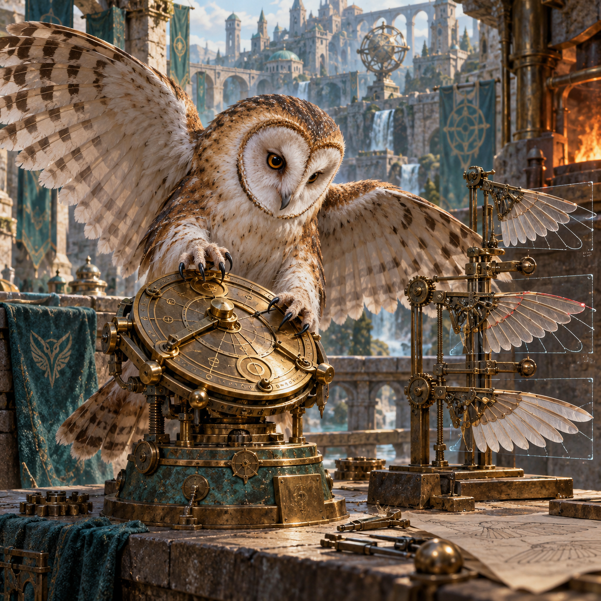
第 1 版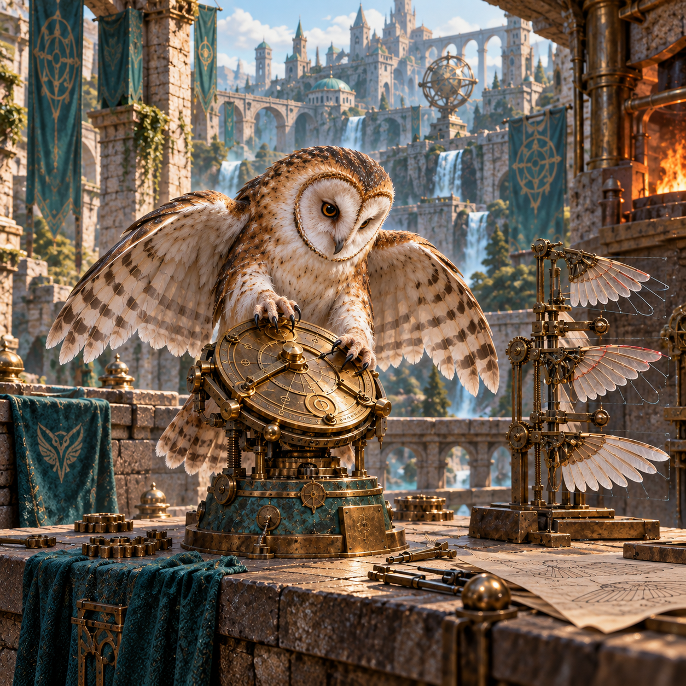
第 2 版 · 本次送審SHA-256：e1160bb18ccc62037a27e4eff422f4293abbe40ca32e5bf7f9fb8e44ac7fe799
SR · 冰探路
冰軌疾行狐
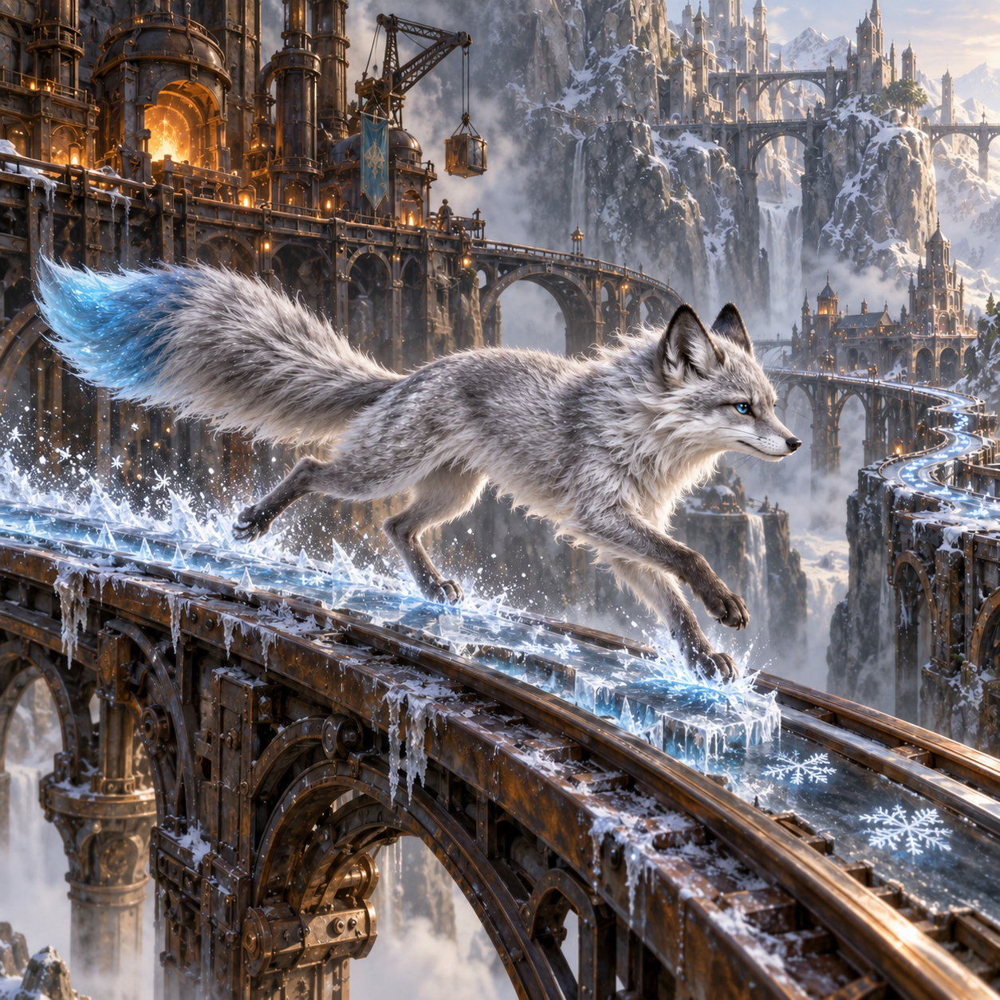
比爭論更早抵達的消息
- 辨識特徵
- 銀灰身形、冰藍尾尖與天然四足
- 故事動作
- 沿高架疾行，送回高崖消息
- 可見結果
- 落脚凝冰，短冰軌與霜線標出路徑
- 形體與構圖
- 完整尾尖；不使用輪子或外掛機械
展開 Lore 與角色對話
冰軌疾行狐往返高崖觀測站與獅心城，把腳下的水汽凝成短暫冰軌。牠親眼看見格里芬逼近試飛塔，也聽見工坊仍在爭論是否繼續。牠沒有替消息加上哪一派的評語，只把時間、風向與距離說清楚。牠知道真相不會自動讓敵人和解，但可以讓其他夥伴少一步誤判。
偏好：frost。快速勘查高架運輸與城外路線，擔任探路；喜歡清涼補給。
normal
消息到了，先看時間。
這條軌道我剛跑過，現在安全。
風向變了，我去前面確認。
你寫下事實，我替你留住路線。
快是為了少一次誤判。
urgent
先看短暫冰軌，最急的地方就在眼前。
先完成能交出去的一段，我替你守著現場。
把真正看見的事情及時帶回去，现在更要記住。
時間緊，先把下一步說清楚。
別一次加滿壓力，完成這一件再接下一件。
important
把真正看見的事情及時帶回去。
像照看短暫冰軌一樣，先弄清這件事需要什麼。
城市的爭論還在，你的選擇也需要自己的理由。
先把承諾寫清楚，再看能承擔多少。
值得用心的事情，要留下查清楚的時間。
praise
做好了！短暫冰軌旁又多了一個完成的記號。
這一步有了結果，我看見了。
你把自己的選擇接穩了。
今天的進展值得記下，不必和誰比快。
完成了，就讓壓力慢慢降下來。
idle
先歇一刻，短暫冰軌可以等。
我留在這裡，你想好再接下一步。
城市還有蒸汽聲，我們先聽一會兒。
bondUp
我願意把短暫冰軌也交給你照看。
下次進城，我想繼續和你同行。
summon
冰軌疾行狐來到你面前，帶著短暫冰軌的故事，與你訂下屬於自己的契約。
展開四章羈絆故事
Lv.2 · 消息的時間・初見
你在短暫冰軌旁遇見冰軌疾行狐。牠沒有先談城市兩派的爭論，而是讓你看清眼前正在做的事：沿高架疾行，送回高崖消息。
落脚凝冰，短冰軌與霜線標出路徑。你站在牠身旁，聽見牠說：「消息到了，先看時間。」
和冰軌疾行狐一起完成你選定的一項任務或習慣，練習把真正看見的事情及時帶回去。
約定完成後，冰軌疾行狐對你說：「做好了！短暫冰軌旁又多了一個完成的記號。」你們記下今天的結果，為下一段相處留下空間。
Lv.3 · 消息的時間・坦白
冰軌疾行狐第一次把那段來歷完整告訴你。冰軌疾行狐往返高崖觀測站與獅心城，把腳下的水汽凝成短暫冰軌。牠親眼看見格里芬逼近試飛塔，也聽見工坊仍在爭論是否繼續。牠沒有替消息加上哪一派的評語，只把時間、風向與距離說清楚。牠知道真相不會自動讓敵人和解，但可以讓其他夥伴少一步誤判。
你沒有替牠的經歷改寫結局。把真正看見的事情及時帶回去，是牠想親口說明的選擇。
和冰軌疾行狐一起完成你選定的一項任務或習慣，練習把真正看見的事情及時帶回去。
約定完成後，冰軌疾行狐對你說：「這一步有了結果，我看見了。」你們記下今天的結果，為下一段相處留下空間。
Lv.4 · 消息的時間・約定
你們再次回到短暫冰軌旁。冰軌疾行狐將下一步交給你選擇，並說：「把真正看見的事情及時帶回去。」
城市的對立沒有停止，今天的約定只屬於你們。把真正看見的事情及時帶回去。
和冰軌疾行狐一起完成你選定的一項任務或習慣，練習把真正看見的事情及時帶回去。
約定完成後，冰軌疾行狐對你說：「你把自己的選擇接穩了。」你們記下今天的結果，為下一段相處留下空間。
Lv.5 · 消息的時間・同行
你們回到最初的工作現場，冰軌疾行狐不再只展示自己的本領，也把下一步交給你一起決定。把真正看見的事情及時帶回去。
牠準備了「疾行冰軌片」。下次進城，我想繼續和你同行。
和冰軌疾行狐一起完成你選定的一項任務或習慣，練習把真正看見的事情及時帶回去。
約定完成後，冰軌疾行狐對你說：「今天的進展值得記下，不必和誰比快。」你收下「疾行冰軌片」，將這份同行留在自己的記錄裡。
紀念物：疾行冰軌片。冰軌疾行狐交給你的疾行冰軌片，記下你們照看短暫冰軌的約定。把真正看見的事情及時帶回去。
來源、自查與前版比較
以真實動物輪廓為基礎；名稱、能力、道具、獅心城工作與故事為遊戲原創。
已逐張查看實際圖：物種與主要肢體可辨、臉與工作道具清楚、主要翼尖／尾端未裁切；由人工確認畫風及故事表達。部分小角色邊距較緊，審圖頁提供 160px 檢視。
修訂：移除首版多出的機械背具與圍巾
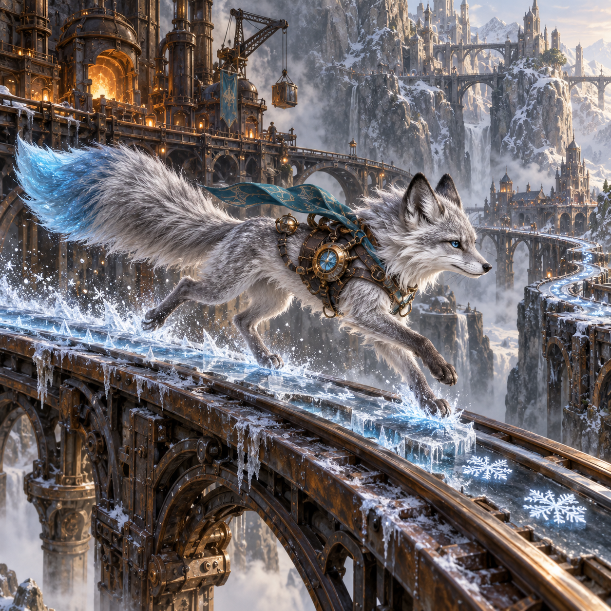
第 1 版 第 2 版 · 本次送審
第 2 版 · 本次送審SHA-256：187d62123bb34d05a99bec96047697d1bc71effc1303e01097d56df436d74369
SR · 火守護
赤爐鍛角羊
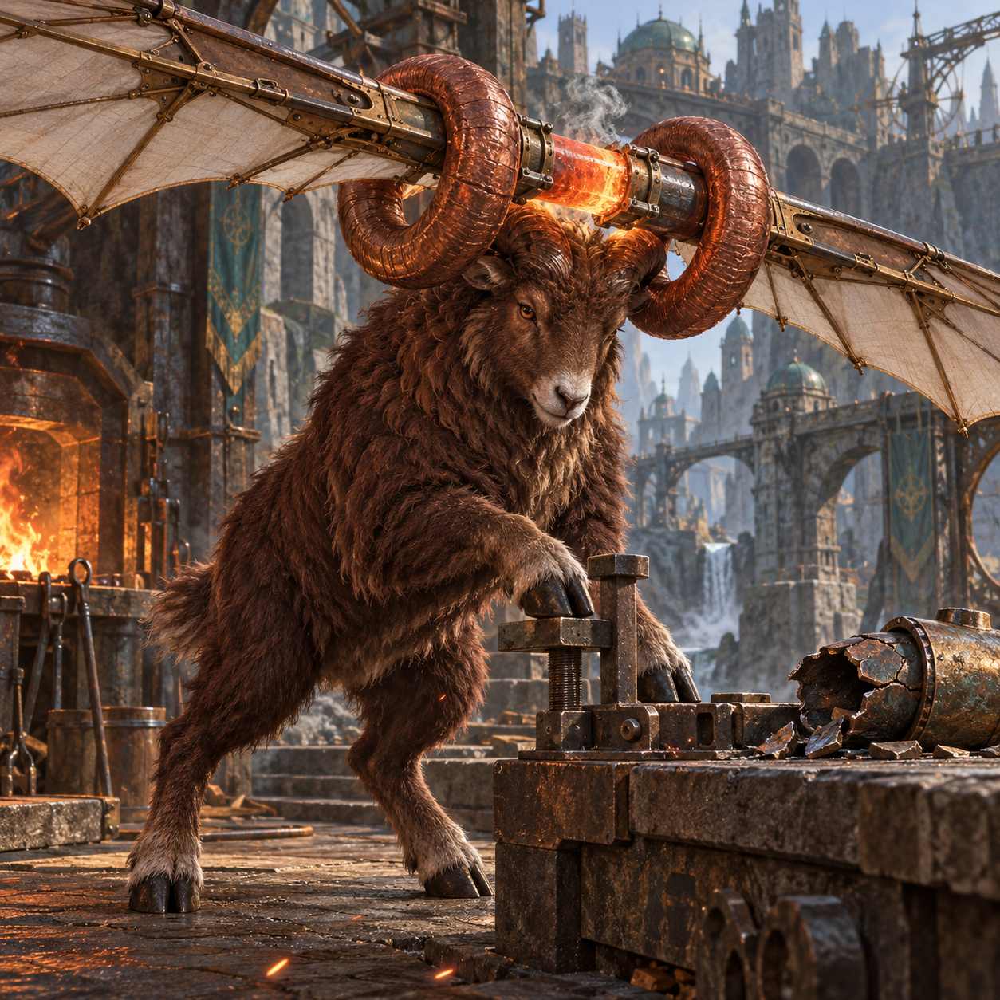
把野心鍛成能承重的形狀
- 辨識特徵
- 深栗羊毛、巨大天然耐熱彎角與四蹄
- 故事動作
- 雙角架穩翼樑、前蹄操作鍛台固定桿
- 可見結果
- 新接頭凝實，破裂舊工件留在桌邊
- 形體與構圖
- 不把翼樑畫成羊本身的翅膀；保留角與四蹄
展開 Lore 與角色對話
赤爐鍛角羊以耐熱雙角固定工件，是奇美拉人工骨架的鍛造者。牠相信人工生命值得離開培育艙，卻曾因急著追上試飛日期而留下不合格的翼樑。牠親自折斷那件半成品，重新開爐。對牠而言，支持一條劍走偏鋒的道路，不等於把缺陷交給下一個承受重量的生命。
偏好：fire。耐熱能力與結構固定可保護鍛造現場；喜歡爐香烘焙食物。
normal
這根不合格，重鍛。
喊得再響，也不能替翼樑承重。
把材料拿穩，我来接這一下。
你的方法可以不同，接頭得扎實。
先做能承重的部分，後面才飛得起來。
urgent
先看承重翼樑，最急的地方就在眼前。
先完成能交出去的一段，我替你守著現場。
要支持一件事，就先讓它承得住重量，现在更要記住。
時間緊，先把下一步說清楚。
別一次加滿壓力，完成這一件再接下一件。
important
要支持一件事，就先讓它承得住重量。
像照看承重翼樑一樣，先弄清這件事需要什麼。
城市的爭論還在，你的選擇也需要自己的理由。
先把承諾寫清楚，再看能承擔多少。
值得用心的事情，要留下查清楚的時間。
praise
做好了！承重翼樑旁又多了一個完成的記號。
這一步有了結果，我看見了。
你把自己的選擇接穩了。
今天的進展值得記下，不必和誰比快。
完成了，就讓壓力慢慢降下來。
idle
先歇一刻，承重翼樑可以等。
我留在這裡，你想好再接下一步。
城市還有蒸汽聲，我們先聽一會兒。
bondUp
我願意把承重翼樑也交給你照看。
下次進城，我想繼續和你同行。
summon
赤爐鍛角羊來到你面前，帶著承重翼樑的故事，與你訂下屬於自己的契約。
展開四章羈絆故事
Lv.2 · 重新開爐・初見
你在承重翼樑旁遇見赤爐鍛角羊。牠沒有先談城市兩派的爭論，而是讓你看清眼前正在做的事：雙角架穩翼樑、前蹄操作鍛台固定桿。
新接頭凝實，破裂舊工件留在桌邊。你站在牠身旁，聽見牠說：「這根不合格，重鍛。」
和赤爐鍛角羊一起完成你選定的一項任務或習慣，練習要支持一件事，就先讓它承得住重量。
約定完成後，赤爐鍛角羊對你說：「做好了！承重翼樑旁又多了一個完成的記號。」你們記下今天的結果，為下一段相處留下空間。
Lv.3 · 重新開爐・坦白
赤爐鍛角羊第一次把那段來歷完整告訴你。赤爐鍛角羊以耐熱雙角固定工件，是奇美拉人工骨架的鍛造者。牠相信人工生命值得離開培育艙，卻曾因急著追上試飛日期而留下不合格的翼樑。牠親自折斷那件半成品，重新開爐。對牠而言，支持一條劍走偏鋒的道路，不等於把缺陷交給下一個承受重量的生命。
你沒有替牠的經歷改寫結局。要支持一件事，就先讓它承得住重量，是牠想親口說明的選擇。
和赤爐鍛角羊一起完成你選定的一項任務或習慣，練習要支持一件事，就先讓它承得住重量。
約定完成後，赤爐鍛角羊對你說：「這一步有了結果，我看見了。」你們記下今天的結果，為下一段相處留下空間。
Lv.4 · 重新開爐・約定
你們再次回到承重翼樑旁。赤爐鍛角羊將下一步交給你選擇，並說：「要支持一件事，就先讓它承得住重量。」
城市的對立沒有停止，今天的約定只屬於你們。要支持一件事，就先讓它承得住重量。
和赤爐鍛角羊一起完成你選定的一項任務或習慣，練習要支持一件事，就先讓它承得住重量。
約定完成後，赤爐鍛角羊對你說：「你把自己的選擇接穩了。」你們記下今天的結果，為下一段相處留下空間。
Lv.5 · 重新開爐・同行
你們回到最初的工作現場，赤爐鍛角羊不再只展示自己的本領，也把下一步交給你一起決定。要支持一件事，就先讓它承得住重量。
牠準備了「鍛角試件」。下次進城，我想繼續和你同行。
和赤爐鍛角羊一起完成你選定的一項任務或習慣，練習要支持一件事，就先讓它承得住重量。
約定完成後，赤爐鍛角羊對你說：「今天的進展值得記下，不必和誰比快。」你收下「鍛角試件」，將這份同行留在自己的記錄裡。
紀念物：鍛角試件。赤爐鍛角羊交給你的鍛角試件，記下你們照看承重翼樑的約定。要支持一件事，就先讓它承得住重量。
來源、自查與前版比較
以真實動物輪廓為基礎；名稱、能力、道具、獅心城工作與故事為遊戲原創。
已逐張查看實際圖：物種與主要肢體可辨、臉與工作道具清楚、主要翼尖／尾端未裁切；由人工確認畫風及故事表達。部分小角色邊距較緊，審圖頁提供 160px 檢視。
修訂：未修訂
 第 1 版 · 本次送審
第 1 版 · 本次送審SHA-256：c0282338c4dd5a2e1b1028fd48e380043f1db8ff0b40412f1af339c28d18bb62
R · 水・機械解讀
銅管引水獺
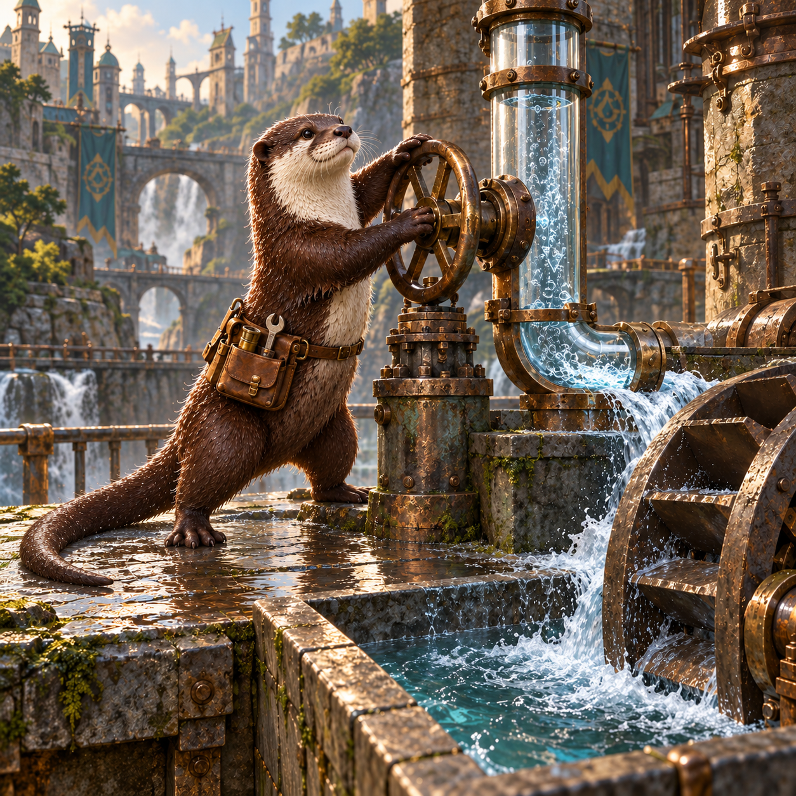
接通城市的呼吸
- 辨識特徵
- 棕毛、奶白喉斑與天然長尾
- 故事動作
- 雙前爪轉動冷卻閥輪
- 可見結果
- 觀測管接通清水，水輪與冷卻槽恢復水流
- 形體與構圖
- 完整尾部；由真實水流表達方向
展開 Lore 與角色對話
銅管引水獺熟悉獅心城每條冷卻水道。牠曾為研究區讓出整晚水量，直到普通工坊的水輪停轉，才發現宏大的試驗也會擠壓居民的日常。如今牠每次調閥都先算好兩邊所需，爭論最激烈時仍把水送到每一戶。牠不替任何一派喊口號，但從不允許城市因一場研究而停止呼吸。
偏好：machine。可判讀管線與水壓，因此擔任解讀；維修工作後偏愛工坊能量補給。
normal
水先送到住家，再談試驗。
這裡有回流，我聽得出來。
閥輪慢慢轉，別一下開到底。
今天的工作像管線，一段段接起來。
你把下一步說清楚，我替你找入口。
urgent
先看冷卻閥輪，最急的地方就在眼前。
先完成能交出去的一段，我替你守著現場。
先接通大家真正需要的日常，现在更要記住。
時間緊，先把下一步說清楚。
別一次加滿壓力，完成這一件再接下一件。
important
先接通大家真正需要的日常。
像照看冷卻閥輪一樣，先弄清這件事需要什麼。
城市的爭論還在，你的選擇也需要自己的理由。
先把承諾寫清楚，再看能承擔多少。
值得用心的事情，要留下查清楚的時間。
praise
做好了！冷卻閥輪旁又多了一個完成的記號。
這一步有了結果，我看見了。
你把自己的選擇接穩了。
今天的進展值得記下，不必和誰比快。
完成了，就讓壓力慢慢降下來。
idle
先歇一刻，冷卻閥輪可以等。
我留在這裡，你想好再接下一步。
城市還有蒸汽聲，我們先聽一會兒。
bondUp
我願意把冷卻閥輪也交給你照看。
下次進城，我想繼續和你同行。
summon
銅管引水獺來到你面前，帶著冷卻閥輪的故事，與你訂下屬於自己的契約。
展開四章羈絆故事
Lv.2 · 讓水先到家・初見
你在冷卻閥輪旁遇見銅管引水獺。牠沒有先談城市兩派的爭論，而是讓你看清眼前正在做的事：雙前爪轉動冷卻閥輪。
觀測管接通清水，水輪與冷卻槽恢復水流。你站在牠身旁，聽見牠說：「水先送到住家，再談試驗。」
和銅管引水獺一起完成你選定的一項任務或習慣，練習先接通大家真正需要的日常。
約定完成後，銅管引水獺對你說：「做好了！冷卻閥輪旁又多了一個完成的記號。」你們記下今天的結果，為下一段相處留下空間。
Lv.3 · 讓水先到家・坦白
銅管引水獺第一次把那段來歷完整告訴你。銅管引水獺熟悉獅心城每條冷卻水道。牠曾為研究區讓出整晚水量，直到普通工坊的水輪停轉，才發現宏大的試驗也會擠壓居民的日常。如今牠每次調閥都先算好兩邊所需，爭論最激烈時仍把水送到每一戶。牠不替任何一派喊口號，但從不允許城市因一場研究而停止呼吸。
你沒有替牠的經歷改寫結局。先接通大家真正需要的日常，是牠想親口說明的選擇。
和銅管引水獺一起完成你選定的一項任務或習慣，練習先接通大家真正需要的日常。
約定完成後，銅管引水獺對你說：「這一步有了結果，我看見了。」你們記下今天的結果，為下一段相處留下空間。
Lv.4 · 讓水先到家・約定
你們再次回到冷卻閥輪旁。銅管引水獺將下一步交給你選擇，並說：「先接通大家真正需要的日常。」
城市的對立沒有停止，今天的約定只屬於你們。先接通大家真正需要的日常。
和銅管引水獺一起完成你選定的一項任務或習慣，練習先接通大家真正需要的日常。
約定完成後，銅管引水獺對你說：「你把自己的選擇接穩了。」你們記下今天的結果，為下一段相處留下空間。
Lv.5 · 讓水先到家・同行
你們回到最初的工作現場，銅管引水獺不再只展示自己的本領，也把下一步交給你一起決定。先接通大家真正需要的日常。
牠準備了「引水閥刻片」。下次進城，我想繼續和你同行。
和銅管引水獺一起完成你選定的一項任務或習慣，練習先接通大家真正需要的日常。
約定完成後，銅管引水獺對你說：「今天的進展值得記下，不必和誰比快。」你收下「引水閥刻片」，將這份同行留在自己的記錄裡。
紀念物：引水閥刻片。銅管引水獺交給你的引水閥刻片，記下你們照看冷卻閥輪的約定。先接通大家真正需要的日常。
來源、自查與前版比較
以真實動物輪廓為基礎；名稱、能力、道具、獅心城工作與故事為遊戲原創。
已逐張查看實際圖：物種與主要肢體可辨、臉與工作道具清楚、主要翼尖／尾端未裁切；由人工確認畫風及故事表達。部分小角色邊距較緊，審圖頁提供 160px 檢視。
修訂：移除管內示意箭頭、修正尾部邊距
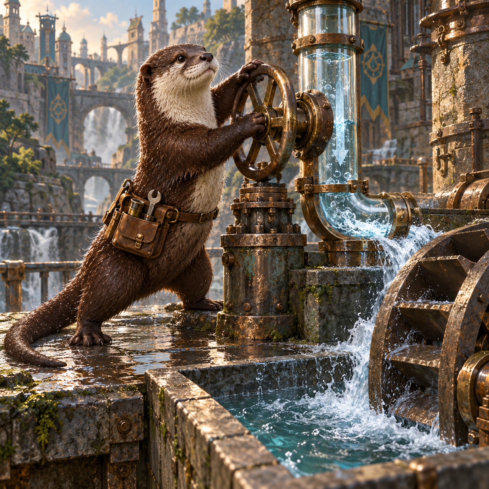
第 1 版 第 2 版 · 本次送審
第 2 版 · 本次送審SHA-256：09f72b0ce6ce119254f58a61c81e160810df85512c8c16ccf63961c262e4e224
R · 冰探路
霜閥巡路兔

在危險旁留下落腳點
- 辨識特徵
- 長耳淡青霜邊與天然四足
- 故事動作
- 在洩漏管旁踏上穩固石板，標出霜痕
- 可見結果
- 霜路繞開裂管熱汽，下一處安全落點清楚
- 形體與構圖
- 普通巡查提燈與地圖包已寫入 Lore；沒有光系能力或機械肢體
展開 Lore 與角色對話
霜閥巡路兔沿研究區的冷卻管道巡查，以耳尖感受壓力變化。牠攜帶巡查地圖與普通提燈，逐段記下需要回報的故障。一次試驗前，牠發現常走的踏板已有裂痕，卻因怕打斷研究而沒有立刻回報。夜裡蒸汽洩漏，牠用霜痕帶走受困學徒。從此，牠不再把警告吞回去：再完美的圖紙，也不能取代眼前真正安全的一步。
偏好：frost。敏銳辨識低溫路線與危險落腳處，擔任探路；偏愛冰涼食物。
normal
那塊踏板有裂痕，走這邊。
耳尖聽到的聲音不太對。
不用硬闖，我找得到另一條路。
我留了霜痕，你跟著踩。
有疑問就停一刻，回報也算前進。
urgent
先看管旁霜痕，最急的地方就在眼前。
先完成能交出去的一段，我替你守著現場。
發現危險就及時說出來，现在更要記住。
時間緊，先把下一步說清楚。
別一次加滿壓力，完成這一件再接下一件。
important
發現危險就及時說出來。
像照看管旁霜痕一樣，先弄清這件事需要什麼。
城市的爭論還在，你的選擇也需要自己的理由。
先把承諾寫清楚，再看能承擔多少。
值得用心的事情，要留下查清楚的時間。
praise
做好了！管旁霜痕旁又多了一個完成的記號。
這一步有了結果，我看見了。
你把自己的選擇接穩了。
今天的進展值得記下，不必和誰比快。
完成了，就讓壓力慢慢降下來。
idle
先歇一刻，管旁霜痕可以等。
我留在這裡，你想好再接下一步。
城市還有蒸汽聲，我們先聽一會兒。
bondUp
我願意把管旁霜痕也交給你照看。
下次進城，我想繼續和你同行。
summon
霜閥巡路兔來到你面前，帶著管旁霜痕的故事，與你訂下屬於自己的契約。
展開四章羈絆故事
Lv.2 · 把警告說出來・初見
你在管旁霜痕旁遇見霜閥巡路兔。牠沒有先談城市兩派的爭論，而是讓你看清眼前正在做的事：在洩漏管旁踏上穩固石板，標出霜痕。
霜路繞開裂管熱汽，下一處安全落點清楚。你站在牠身旁，聽見牠說：「那塊踏板有裂痕，走這邊。」
和霜閥巡路兔一起完成你選定的一項任務或習慣，練習發現危險就及時說出來。
約定完成後，霜閥巡路兔對你說：「做好了！管旁霜痕旁又多了一個完成的記號。」你們記下今天的結果，為下一段相處留下空間。
Lv.3 · 把警告說出來・坦白
霜閥巡路兔第一次把那段來歷完整告訴你。霜閥巡路兔沿研究區的冷卻管道巡查，以耳尖感受壓力變化。一次試驗前，牠發現常走的踏板已有裂痕，卻因怕打斷研究而沒有立刻回報。夜裡蒸汽洩漏，牠用霜痕帶走受困學徒。從此，牠不再把警告吞回去：再完美的圖紙，也不能取代眼前真正安全的一步。
你沒有替牠的經歷改寫結局。發現危險就及時說出來，是牠想親口說明的選擇。
和霜閥巡路兔一起完成你選定的一項任務或習慣，練習發現危險就及時說出來。
約定完成後，霜閥巡路兔對你說：「這一步有了結果，我看見了。」你們記下今天的結果，為下一段相處留下空間。
Lv.4 · 把警告說出來・約定
你們再次回到管旁霜痕旁。霜閥巡路兔將下一步交給你選擇，並說：「發現危險就及時說出來。」
城市的對立沒有停止，今天的約定只屬於你們。發現危險就及時說出來。
和霜閥巡路兔一起完成你選定的一項任務或習慣，練習發現危險就及時說出來。
約定完成後，霜閥巡路兔對你說：「你把自己的選擇接穩了。」你們記下今天的結果，為下一段相處留下空間。
Lv.5 · 把警告說出來・同行
你們回到最初的工作現場，霜閥巡路兔不再只展示自己的本領，也把下一步交給你一起決定。發現危險就及時說出來。
牠準備了「巡路霜石」。下次進城，我想繼續和你同行。
和霜閥巡路兔一起完成你選定的一項任務或習慣，練習發現危險就及時說出來。
約定完成後，霜閥巡路兔對你說：「今天的進展值得記下，不必和誰比快。」你收下「巡路霜石」，將這份同行留在自己的記錄裡。
紀念物：巡路霜石。霜閥巡路兔交給你的巡路霜石，記下你們照看管旁霜痕的約定。發現危險就及時說出來。
來源、自查與前版比較
以真實動物輪廓為基礎；名稱、能力、道具、獅心城工作與故事為遊戲原創。
已逐張查看實際圖：物種與主要肢體可辨、臉與工作道具清楚、主要翼尖／尾端未裁切；由人工確認畫風及故事表達。部分小角色邊距較緊，審圖頁提供 160px 檢視。
修訂：普通巡查道具已對齊設計與故事
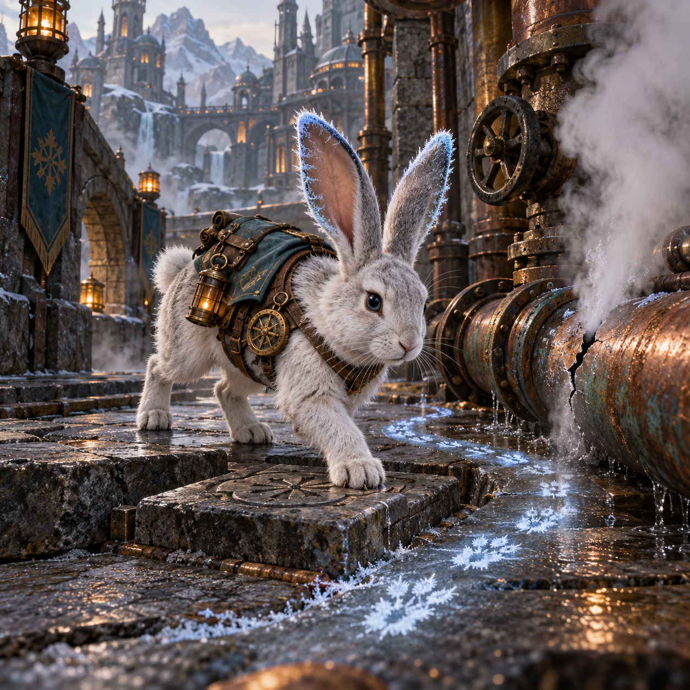
第 1 版 · 本次送審SHA-256：6f52890d7605f596a19041709015d4771799eb95c5589cc57b48b608d1b5e577
R · 火守護
爐膛添薪蜥
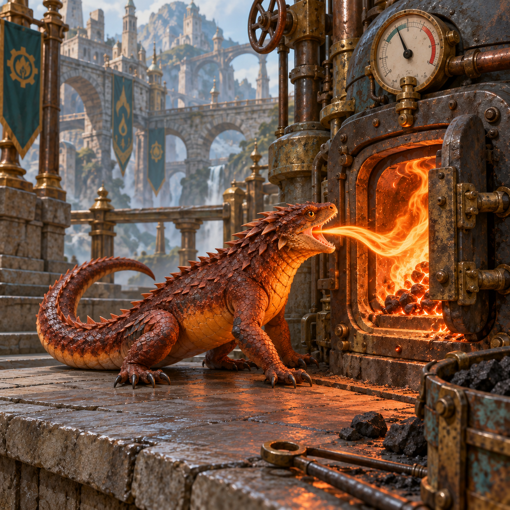
守住安全的那一格
- 辨識特徵
- 赤褐鱗片、橙色胸腹、四足長尾
- 故事動作
- 將外溢焰舌收回爐室
- 可見結果
- 受控火流回到爐膛，錶針停在安全中段
- 形體與構圖
- 無翼、無裝備、完整尾部，沒有爆炸
展開 Lore 與角色對話
爐膛添薪蜥在獅心城公共蒸汽爐旁長大，胸腹的赤色鱗片能收束火焰。研究者不斷要求更高壓力，牠一度以為火越旺越能幫上忙，直到管道開始震顫。牠把焰舌收回安全範圍，拒絕再照著口令加火。牠並不反對創造，只是不願讓每個還在城市裡生活的生命，替野心承受無限壓力。
偏好：fire。能控制爐火、守住危險現場；偏愛溫熱燻烤補給。
normal
火够用了，先別加。
指針回到中間，我才放心。
你先做一件，我守著爐口。
熱血可以，過熱不行。
今天也要替明天留一點燃料。
urgent
先看爐旁壓力錶，最急的地方就在眼前。
先完成能交出去的一段，我替你守著現場。
力量必須留在能承受的範圍內，现在更要記住。
時間緊，先把下一步說清楚。
別一次加滿壓力，完成這一件再接下一件。
important
力量必須留在能承受的範圍內。
像照看爐旁壓力錶一樣，先弄清這件事需要什麼。
城市的爭論還在，你的選擇也需要自己的理由。
先把承諾寫清楚，再看能承擔多少。
值得用心的事情，要留下查清楚的時間。
praise
做好了！爐旁壓力錶旁又多了一個完成的記號。
這一步有了結果，我看見了。
你把自己的選擇接穩了。
今天的進展值得記下，不必和誰比快。
完成了，就讓壓力慢慢降下來。
idle
先歇一刻，爐旁壓力錶可以等。
我留在這裡，你想好再接下一步。
城市還有蒸汽聲，我們先聽一會兒。
bondUp
我願意把爐旁壓力錶也交給你照看。
下次進城，我想繼續和你同行。
summon
爐膛添薪蜥來到你面前，帶著爐旁壓力錶的故事，與你訂下屬於自己的契約。
展開四章羈絆故事
Lv.2 · 安全的那一格・初見
你在爐旁壓力錶旁遇見爐膛添薪蜥。牠沒有先談城市兩派的爭論，而是讓你看清眼前正在做的事：將外溢焰舌收回爐室。
受控火流回到爐膛，錶針停在安全中段。你站在牠身旁，聽見牠說：「火够用了，先別加。」
和爐膛添薪蜥一起完成你選定的一項任務或習慣，練習力量必須留在能承受的範圍內。
約定完成後，爐膛添薪蜥對你說：「做好了！爐旁壓力錶旁又多了一個完成的記號。」你們記下今天的結果，為下一段相處留下空間。
Lv.3 · 安全的那一格・坦白
爐膛添薪蜥第一次把那段來歷完整告訴你。爐膛添薪蜥在獅心城公共蒸汽爐旁長大，胸腹的赤色鱗片能收束火焰。研究者不斷要求更高壓力，牠一度以為火越旺越能幫上忙，直到管道開始震顫。牠把焰舌收回安全範圍，拒絕再照著口令加火。牠並不反對創造，只是不願讓每個還在城市裡生活的生命，替野心承受無限壓力。
你沒有替牠的經歷改寫結局。力量必須留在能承受的範圍內，是牠想親口說明的選擇。
和爐膛添薪蜥一起完成你選定的一項任務或習慣，練習力量必須留在能承受的範圍內。
約定完成後，爐膛添薪蜥對你說：「這一步有了結果，我看見了。」你們記下今天的結果，為下一段相處留下空間。
Lv.4 · 安全的那一格・約定
你們再次回到爐旁壓力錶旁。爐膛添薪蜥將下一步交給你選擇，並說：「力量必須留在能承受的範圍內。」
城市的對立沒有停止，今天的約定只屬於你們。力量必須留在能承受的範圍內。
和爐膛添薪蜥一起完成你選定的一項任務或習慣，練習力量必須留在能承受的範圍內。
約定完成後，爐膛添薪蜥對你說：「你把自己的選擇接穩了。」你們記下今天的結果，為下一段相處留下空間。
Lv.5 · 安全的那一格・同行
你們回到最初的工作現場，爐膛添薪蜥不再只展示自己的本領，也把下一步交給你一起決定。力量必須留在能承受的範圍內。
牠準備了「添薪爐陶片」。下次進城，我想繼續和你同行。
和爐膛添薪蜥一起完成你選定的一項任務或習慣，練習力量必須留在能承受的範圍內。
約定完成後，爐膛添薪蜥對你說：「今天的進展值得記下，不必和誰比快。」你收下「添薪爐陶片」，將這份同行留在自己的記錄裡。
紀念物：添薪爐陶片。爐膛添薪蜥交給你的添薪爐陶片，記下你們照看爐旁壓力錶的約定。力量必須留在能承受的範圍內。
來源、自查與前版比較
以真實動物輪廓為基礎；名稱、能力、道具、獅心城工作與故事為遊戲原創。
已逐張查看實際圖：物種與主要肢體可辨、臉與工作道具清楚、主要翼尖／尾端未裁切；由人工確認畫風及故事表達。部分小角色邊距較緊，審圖頁提供 160px 檢視。
修訂：修正尾部裁切，收束火流
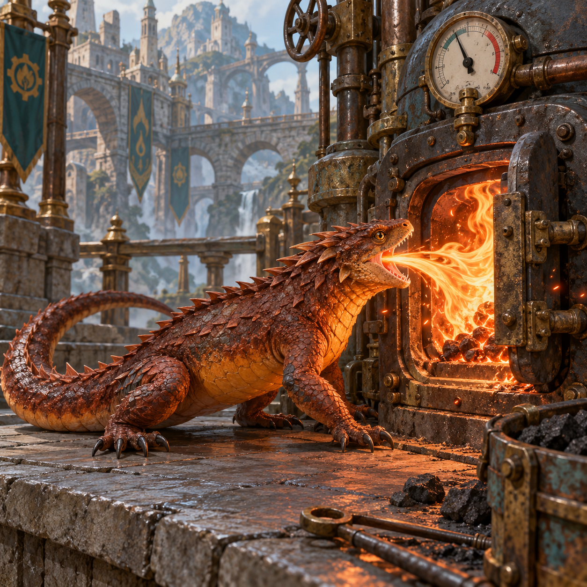
第 1 版 第 2 版 · 本次送審
第 2 版 · 本次送審SHA-256：1290ecf6c555ebfe8e2f0408a9062aec2103d60bc8a86f93cafd520b79cc47d6
N · 機械解讀
齒輪拾修鼠
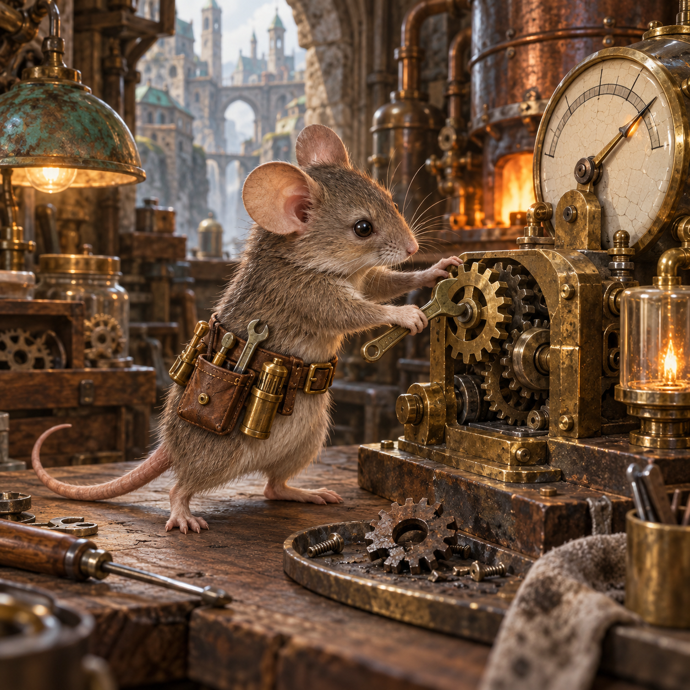
小齒輪也有自己的位置
- 辨識特徵
- 圓耳、灰褐毛與天然長尾
- 故事動作
- 穩住齒輪、轉動扳手，替換磨損零件
- 可見結果
- 新齒輪咬合，測試儀指針轉動；舊件留在桌邊
- 形體與構圖
- 尾尖與四足完整，維修工具不遮臉
展開 Lore 與角色對話
齒輪拾修鼠是逆造工坊最小的學徒，總在大工匠離開後收拾落在地上的零件。牠曾把一枚磨損齒輪偷偷換成新件，讓測試儀恢復運作，也讓尚未準備好的試驗提早開始。自那日起，牠學會修好東西之前先問清用途。牠還不懂追逐神的野心，只知道每一個接回去的零件，都會把城市帶向某個方向。
偏好：machine。熟悉齒輪與測試儀，可以解讀零件故障；偏愛工坊作業能量食物。
normal
這顆少一齒，我先放到另一邊。
大機器停了？讓我看看最小的地方。
你先寫，我替你把零件排好。
修好了，也要問問它接下來會做什麼。
今天只換一顆齒輪，也能讓指針往前。
urgent
先看磨損齒輪，最急的地方就在眼前。
先完成能交出去的一段，我替你守著現場。
先問清一件事的用途，再替它接上力量，现在更要記住。
時間緊，先把下一步說清楚。
別一次加滿壓力，完成這一件再接下一件。
important
先問清一件事的用途，再替它接上力量。
像照看磨損齒輪一樣，先弄清這件事需要什麼。
城市的爭論還在，你的選擇也需要自己的理由。
先把承諾寫清楚，再看能承擔多少。
值得用心的事情，要留下查清楚的時間。
praise
做好了！磨損齒輪旁又多了一個完成的記號。
這一步有了結果，我看見了。
你把自己的選擇接穩了。
今天的進展值得記下，不必和誰比快。
完成了，就讓壓力慢慢降下來。
idle
先歇一刻，磨損齒輪可以等。
我留在這裡，你想好再接下一步。
城市還有蒸汽聲，我們先聽一會兒。
bondUp
我願意把磨損齒輪也交給你照看。
下次進城，我想繼續和你同行。
summon
齒輪拾修鼠來到你面前，帶著磨損齒輪的故事，與你訂下屬於自己的契約。
展開四章羈絆故事
Lv.2 · 接回的位置・初見
你在磨損齒輪旁遇見齒輪拾修鼠。牠沒有先談城市兩派的爭論，而是讓你看清眼前正在做的事：穩住齒輪、轉動扳手，替換磨損零件。
新齒輪咬合，測試儀指針轉動；舊件留在桌邊。你站在牠身旁，聽見牠說：「這顆少一齒，我先放到另一邊。」
和齒輪拾修鼠一起完成你選定的一項任務或習慣，練習先問清一件事的用途，再替它接上力量。
約定完成後，齒輪拾修鼠對你說：「做好了！磨損齒輪旁又多了一個完成的記號。」你們記下今天的結果，為下一段相處留下空間。
Lv.3 · 接回的位置・坦白
齒輪拾修鼠第一次把那段來歷完整告訴你。齒輪拾修鼠是逆造工坊最小的學徒，總在大工匠離開後收拾落在地上的零件。牠曾把一枚磨損齒輪偷偷換成新件，讓測試儀恢復運作，也讓尚未準備好的試驗提早開始。自那日起，牠學會修好東西之前先問清用途。牠還不懂追逐神的野心，只知道每一個接回去的零件，都會把城市帶向某個方向。
你沒有替牠的經歷改寫結局。先問清一件事的用途，再替它接上力量，是牠想親口說明的選擇。
和齒輪拾修鼠一起完成你選定的一項任務或習慣，練習先問清一件事的用途，再替它接上力量。
約定完成後，齒輪拾修鼠對你說：「這一步有了結果，我看見了。」你們記下今天的結果，為下一段相處留下空間。
Lv.4 · 接回的位置・約定
你們再次回到磨損齒輪旁。齒輪拾修鼠將下一步交給你選擇，並說：「先問清一件事的用途，再替它接上力量。」
城市的對立沒有停止，今天的約定只屬於你們。先問清一件事的用途，再替它接上力量。
和齒輪拾修鼠一起完成你選定的一項任務或習慣，練習先問清一件事的用途，再替它接上力量。
約定完成後，齒輪拾修鼠對你說：「你把自己的選擇接穩了。」你們記下今天的結果，為下一段相處留下空間。
Lv.5 · 接回的位置・同行
你們回到最初的工作現場，齒輪拾修鼠不再只展示自己的本領，也把下一步交給你一起決定。先問清一件事的用途，再替它接上力量。
牠準備了「拾修定位齒」。下次進城，我想繼續和你同行。
和齒輪拾修鼠一起完成你選定的一項任務或習慣，練習先問清一件事的用途，再替它接上力量。
約定完成後，齒輪拾修鼠對你說：「今天的進展值得記下，不必和誰比快。」你收下「拾修定位齒」，將這份同行留在自己的記錄裡。
紀念物：拾修定位齒。齒輪拾修鼠交給你的拾修定位齒，記下你們照看磨損齒輪的約定。先問清一件事的用途，再替它接上力量。
來源、自查與前版比較
以真實動物輪廓為基礎；名稱、能力、道具、獅心城工作與故事為遊戲原創。
已逐張查看實際圖：物種與主要肢體可辨、臉與工作道具清楚、主要翼尖／尾端未裁切；由人工確認畫風及故事表達。部分小角色邊距較緊，審圖頁提供 160px 檢視。
修訂：未修訂
 第 1 版 · 本次送審
第 1 版 · 本次送審SHA-256：38444eb59db97d03f9766babab0f38774b7c689a8fda39485e2c0539d6393b4b
N · 木採集
苗圃護芽甲蟲
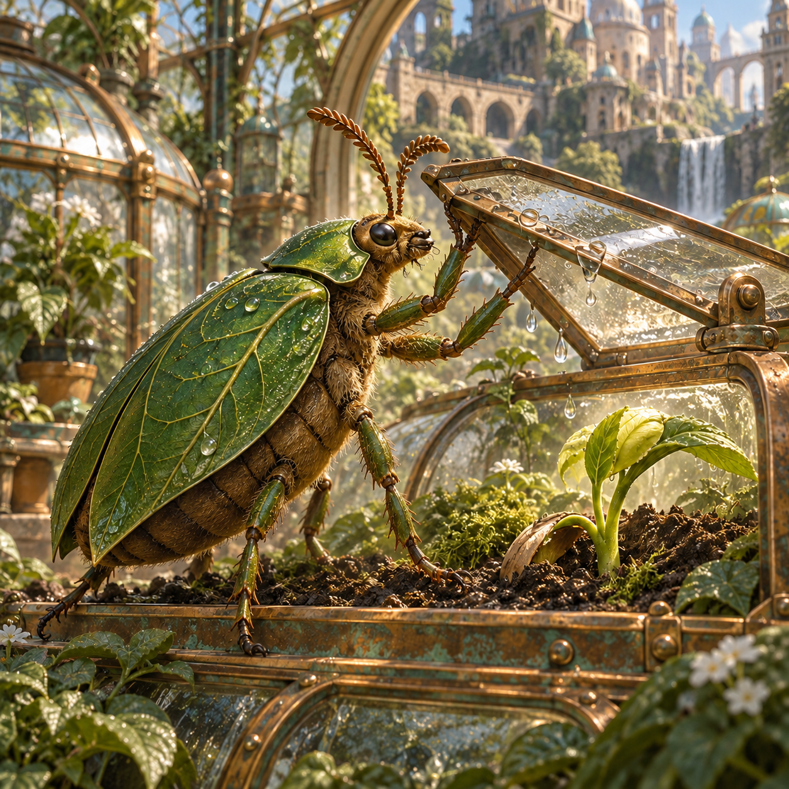
留下自然生長的空間
- 辨識特徵
- 天然葉形鞘翅、兩觸角、六足
- 故事動作
- 以前足頂開溫室通風蓋
- 可見結果
- 凝水流下，芽葉舒展
- 形體與構圖
- 主角為天然甲蟲；銅框只屬於溫室
展開 Lore 與角色對話
苗圃護芽甲蟲住在培育溫室的普通苗床，背上有一對像嫩葉的天然鞘翅。研究者忙著記錄奇美拉的成長時，牠仍逐株檢查幼苗。有人以為加熱越快，植物就能長得越好；牠卻頂開過熱的通風蓋，保住了一床險些乾枯的芽。牠不懂完美的定義，只相信每個生命都應有合適的生長速度。
偏好：nature。逐株辨認苗圃植物、適合採集；喜歡清淡植物靈食。
normal
這株還小，今天先不採。
蓋子開一點，葉子才有空間。
長得慢，也是在長。
露水夠了，我們看看下一株。
你不用趕上別人的速度，先把根站穩。
urgent
先看剛舒展的幼芽，最急的地方就在眼前。
先完成能交出去的一段，我替你守著現場。
給每個生命合適的時間與空間，现在更要記住。
時間緊，先把下一步說清楚。
別一次加滿壓力，完成這一件再接下一件。
important
給每個生命合適的時間與空間。
像照看剛舒展的幼芽一樣，先弄清這件事需要什麼。
城市的爭論還在，你的選擇也需要自己的理由。
先把承諾寫清楚，再看能承擔多少。
值得用心的事情，要留下查清楚的時間。
praise
做好了！剛舒展的幼芽旁又多了一個完成的記號。
這一步有了結果，我看見了。
你把自己的選擇接穩了。
今天的進展值得記下，不必和誰比快。
完成了，就讓壓力慢慢降下來。
idle
先歇一刻，剛舒展的幼芽可以等。
我留在這裡，你想好再接下一步。
城市還有蒸汽聲，我們先聽一會兒。
bondUp
我願意把剛舒展的幼芽也交給你照看。
下次進城，我想繼續和你同行。
summon
苗圃護芽甲蟲來到你面前，帶著剛舒展的幼芽的故事，與你訂下屬於自己的契約。
展開四章羈絆故事
Lv.2 · 留一點空氣・初見
你在剛舒展的幼芽旁遇見苗圃護芽甲蟲。牠沒有先談城市兩派的爭論，而是讓你看清眼前正在做的事：以前足頂開溫室通風蓋。
凝水流下，芽葉舒展。你站在牠身旁，聽見牠說：「這株還小，今天先不採。」
和苗圃護芽甲蟲一起完成你選定的一項任務或習慣，練習給每個生命合適的時間與空間。
約定完成後，苗圃護芽甲蟲對你說：「做好了！剛舒展的幼芽旁又多了一個完成的記號。」你們記下今天的結果，為下一段相處留下空間。
Lv.3 · 留一點空氣・坦白
苗圃護芽甲蟲第一次把那段來歷完整告訴你。苗圃護芽甲蟲住在培育溫室的普通苗床，背上有一對像嫩葉的天然鞘翅。研究者忙著記錄奇美拉的成長時，牠仍逐株檢查幼苗。有人以為加熱越快，植物就能長得越好；牠卻頂開過熱的通風蓋，保住了一床險些乾枯的芽。牠不懂完美的定義，只相信每個生命都應有合適的生長速度。
你沒有替牠的經歷改寫結局。給每個生命合適的時間與空間，是牠想親口說明的選擇。
和苗圃護芽甲蟲一起完成你選定的一項任務或習慣，練習給每個生命合適的時間與空間。
約定完成後，苗圃護芽甲蟲對你說：「這一步有了結果，我看見了。」你們記下今天的結果，為下一段相處留下空間。
Lv.4 · 留一點空氣・約定
你們再次回到剛舒展的幼芽旁。苗圃護芽甲蟲將下一步交給你選擇，並說：「給每個生命合適的時間與空間。」
城市的對立沒有停止，今天的約定只屬於你們。給每個生命合適的時間與空間。
和苗圃護芽甲蟲一起完成你選定的一項任務或習慣，練習給每個生命合適的時間與空間。
約定完成後，苗圃護芽甲蟲對你說：「你把自己的選擇接穩了。」你們記下今天的結果，為下一段相處留下空間。
Lv.5 · 留一點空氣・同行
你們回到最初的工作現場，苗圃護芽甲蟲不再只展示自己的本領，也把下一步交給你一起決定。給每個生命合適的時間與空間。
牠準備了「護芽露珠瓶」。下次進城，我想繼續和你同行。
和苗圃護芽甲蟲一起完成你選定的一項任務或習慣，練習給每個生命合適的時間與空間。
約定完成後，苗圃護芽甲蟲對你說：「今天的進展值得記下，不必和誰比快。」你收下「護芽露珠瓶」，將這份同行留在自己的記錄裡。
紀念物：護芽露珠瓶。苗圃護芽甲蟲交給你的護芽露珠瓶，記下你們照看剛舒展的幼芽的約定。給每個生命合適的時間與空間。
來源、自查與前版比較
以真實動物輪廓為基礎；名稱、能力、道具、獅心城工作與故事為遊戲原創。
已逐張查看實際圖：物種與主要肢體可辨、臉與工作道具清楚、主要翼尖／尾端未裁切；由人工確認畫風及故事表達。部分小角色邊距較緊，審圖頁提供 160px 檢視。
修訂：移除首版容易被看成機械的腿部關節
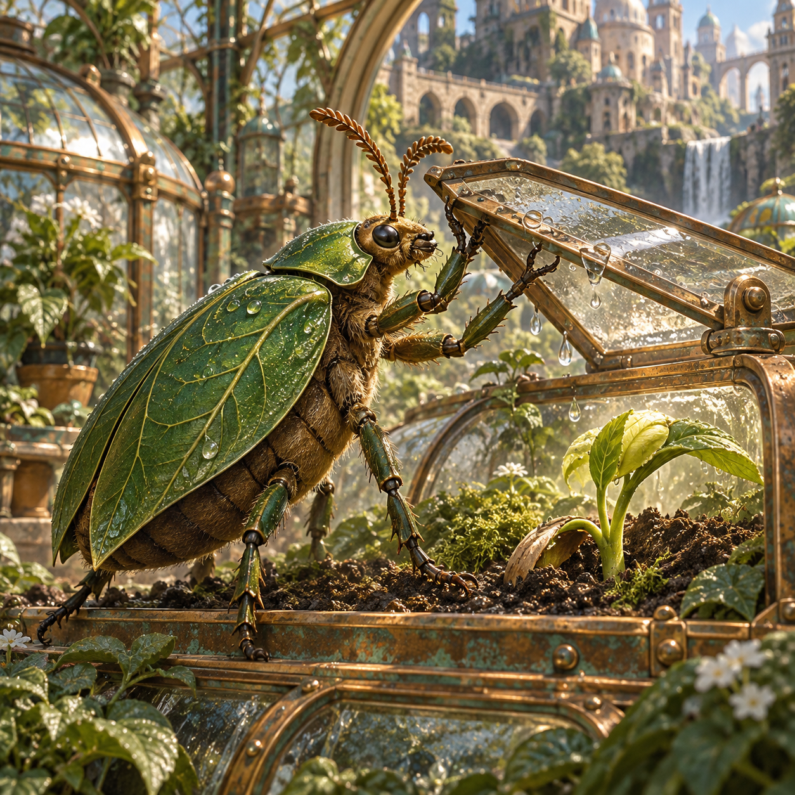
第 1 版 第 2 版 · 本次送審
第 2 版 · 本次送審SHA-256：f8243198fdc99a2981a3cc14933a5133c67f9524998f9538198daf784e123c59